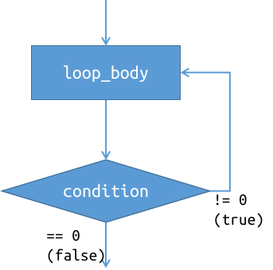

CS100 Lecture 4
Operators and Control Flow II, Functions
Contents
- Operators
- Operator precedence, associativity and evaluation order
- Comparison operators
<, <=, >, >=, ==, !=
- Logical operators
&&, ||, !
- Conditional operator
?:
- Assignment operator
=
- Control Flow
do-whileswitch-case- Functions
Operators
Operator precedence
Operator precedence defines the order in which operators are bound to their arguments.
Example: * and / have higher precedence than + and -, so a + b * c is interpreted as a + (b * c) instead of (a + b) * c.
Operator precedence does not determine evaluation order.
f() + g() * h() is interpreted as f() + (g() * h()), but the order in which f, g and h are called is unspecified.
Associativity
Each operator is either left-associative or right-associative.
Operators with the same precedence have the same associativity.
Example: + and - are left-associative, so a - b + c is interpreted as (a - b) + c, instead of a - (b + c).
Associativity does not determine evaluation order.
f() - g() + h() is interpreted as (f() - g()) + h(), but the order in which f, g and h are called is unspecified.
Evaluation order
Unless otherwise stated, the order in which the operands are evaluated is unspecified.
- We will see that &&, || and ?: (and also ,, in recitations) have specified evaluation order of their operands.
Examples: In the following expressions, it is unspecified whether f is called before g.
f() + g()f() == g()some_function(f(), g()) (Note that the , here is not the comma operator.)- ...
Evaluation order and undefined behavior
Let A and B be two expressions. The behavior is undefined if
- the order in which
A and B are evaluated is unspecified \({}^{\textcolor{red}{1}}\), and
- both
A and B modify an object, or one modifies an object and the other uses its value \({}^{\textcolor{red}{2}}\).
Examples:
i = ++i + i++; // undefined behavior
i = i++ + 1; // undefined behavior
printf("%d, %d\n", i, i++); // undefined behavior
Recall that undefined behavior means "everything is possible". We cannot make any assumptions about the behavior of the program.
Terminology: Return type/value of an operator
When it comes to "the return type/value of an operator", we are actually viewing the operator as a function:
int operator_plus(int a, int b) {
return a + b;
}
int operator_postfix_inc(int &x) { // We must use a C++ notation here.
int old = x;
x += 1;
return old;
}
The "return value" of an operator is the value of the expression it forms.
The "return type" of an operator is the type of its return value.
Comparison operators are binary operators that test a condition and return 1 if that condition is logically true and 0 if it is logically false.
| Operator | Operator name |
| -------- | ------------- |
| `a == b` | equal to |
| `a != b` | not equal to |
| `a < b` | less than |
| Operator | Operator name |
| -------- | ------------------------ |
| `a > b` | greater than |
| `a <= b` | less than or equal to |
| `a >= b` | greater than or equal to |
For most cases, the operands a and b are also converted to a same type, just as what happens for a + b, a - b, ...
Comparison operators
Note: Comparison operators in C cannot be chained.
Example: a < b < c is interpreted as (a < b) < c (due to left-associativity), which means to
- compare
(a < b) first, whose result is either 0 or 1, and then
- compare
0 < c or 1 < c.
To test \(a<b<c\), use a < b && b < c.
Logical operators apply standard boolean algebra operations to their operands.
| Operator | Operator name | Example |
| -------- | ------------- | ---------- |
| `!` | logical NOT | `!a` |
| `&&` | logical AND | `a && b` |
| `\|\|` | logical OR | `a \|\| b` |
Logical operators
!a, a && b, a || b
Recall the boolean algebra:
| $A$ | $B$ | $\neg A$ | $A\land B$ | $A\lor B$ |
| ----- | ----- | -------- | ---------- | --------- |
| True | True | False | True | True |
| True | False | False | False | True |
| False | True | True | False | True |
| False | False | True | False | False |
For C logical operators:
| `a` | `b` | `!a` | `a && b` | `a \|\| b` |
| ------ | ------ | ---- | -------- | ---------- |
| `!= 0` | `!= 0` | `0` | `1` | `1` |
| `!= 0` | `== 0` | `0` | `0` | `1` |
| `== 0` | `!= 0` | `1` | `0` | `1` |
| `== 0` | `== 0` | `1` | `0` | `0` |
Logical operators
Precedence: ! \(>\) comparison operators \(>\) && \(>\) ||.
Typical example: lexicographical comparison of two pairs \((a_1, b_1)\) and \((a_2,b_2)\)
int less(int a1, int b1, int a2, int b2) {
return a1 < a2 || (a1 == a2 && b1 < b2);
}
The parentheses are optional here, but it improves readability.
Avoid abuse of parentheses
Too many parentheses reduce readability:
int less(int a1, int b1, int a2, int b2) {
return (((a1) < (a2)) || (((a1) == (a2)) && ((b1) < (b2))));
// Is this a1 < b1 || (a1 == b1 && a2 < b2)
// or (a1 < b1 || a1 == b1) && a2 < b2 ?
}
[Best practice] Use one pair of parentheses when two binary logical operators meet.
Short-circuit evaluation
a && b and a || b perform short-circuit evaluation:
- For
a && b, a is evaluated first. If a compares equal to zero (is logically false), b is not evaluated.
- \(\mathrm{False}\land p\equiv\mathrm{False}\)
- For
a || b, a is evaluated first. If a compares not equal to zero (is logically true), b is not evaluated.
- \(\mathrm{True}\lor p\equiv\mathrm{True}\)
The evaluation order is specified!
Syntax: condition ? expressionT : expressionF,
where condition is an expression of scalar type.
The evaluation order is specified!
- First,
condition is evaluated.
- If
condition compares not equal to zero (is logically true), expressionT is evaluated, and the result is the value of expressionT.
- Otherwise (if
condition compares equal to zero, which is logically false), expressionF is evaluated, and the result is the value of expressionF.
Conditional operator ?:
Syntax: condition ? expressionT : expressionF,
Example: to_uppercase(c) returns the uppercase form of c if c is a lowercase letter, or c itself if it is not.
char to_uppercase(char c) {
if (c >= 'a' && c <= 'z')
return c - ('a' - 'A');
else
return c;
}
Use ?: to rewrite it:
char to_uppercase(char c) {
return c >= 'a' && c <= 'z' ? c - ('a' - 'A') : c;
}
Conditional operator ?:
Syntax: condition ? expressionT : expressionF
Use it to replace some simple and short if-else statement.
Avoid abusing it! Nested conditional operators reduces readability significantly.
int result = a < b ? (a < c ? a : c) : (b < c ? b : c); // Um ...
[Best practice] Avoid more than two levels of nested conditional operators.
Assignment operator =
lhs = rhs
The assignment operator returns the value of lhs after assignment.
Moreover, the assignment operator is right-associative, making it possible to write "chained" assignments:
int a = 0, b = 1, c = 2;
a = b = c; // interpreted as a = (b = c)
// Both a and b are assigned with 2.
Control Flow
do-while
Syntax: `do loop_body while (condition);`
Executes `loop_body` repeatedly until the value of `condition` compares equal to zero (is logically **false**).
Example:
int i = 0;
do {
printf("%d", i++);
} while (i < 5);
Output: `01234`

do-while
Note that in each iteration, the condition is tested after the body is executed.
int i = 0;
do {
printf("%d", i++);
} while (i < n);
Even if n == 0, 0 is printed. The loop body is always executed at least once.
do-while
Exercise: Rewrite a do-while loop using a while loop.
do {
// loop_body
} while (condition);
do-while
Exercise: Rewrite a do-while loop using a while loop.
do {
// loop_body
} while (condition);
Use while (1) and break:
while (1) {
// loop_body
if (!condition)
break;
}
switch-case
The calculator example:
int main(void) {
double a, b;
char op;
scanf("%lf %c %lf", &a, &op, &b);
if (op == '+')
printf("%lf\n", a + b);
else if (op == '-')
printf("%lf\n", a - b);
else if (op == '*')
printf("%lf\n", a * b);
else if (op == '/')
printf("%lf\n", a / b);
else
printf("Invalid operator!\n");
return 0;
}
switch-case
Rewrite it using switch-case:
if (op == '+')
printf("%lf\n", a + b);
else if (op == '-')
printf("%lf\n", a - b);
else if (op == '*')
printf("%lf\n", a * b);
else if (op == '/')
printf("%lf\n", a / b);
else
printf("Invalid operator: %c\n", op);
switch (op) {
case '+':
printf("%lf\n", a + b); break;
case '-':
printf("%lf\n", a - b); break;
case '*':
printf("%lf\n", a * b); break;
case '/':
printf("%lf\n", a / b); break;
default:
printf("Invalid operator!\n");
break;
}
switch-case
switch (expression) { ... }
switch (op) {
case '+':
printf("%lf\n", a + b); break;
case '-':
printf("%lf\n", a - b); break;
case '*':
printf("%lf\n", a * b); break;
case '/':
printf("%lf\n", a / b); break;
default:
printf("Invalid operator!\n");
break;
}
- First, `expression` is evaluated.
- Control finds the `case` label to which `expression` compares equal, and then goes to that label.
- Starting from the selected label, **all subsequent statements are executed until a `break;` or the end of the `switch` statement is reached.**
- Note that `break;` here has a special meaning.
switch-case
switch (expression) { ... }
switch (op) {
case '+':
printf("%lf\n", a + b); break;
case '-':
printf("%lf\n", a - b); break;
case '*':
printf("%lf\n", a * b); break;
case '/':
printf("%lf\n", a / b); break;
default:
printf("Invalid operator!\n");
break;
}
- If no `case` label is selected and `default:` is present, the control goes to the `default:` label.
- `default:` is optional, and often appears in the end, though not necessarily.
- `break;` is often needed. Modern compilers often warn against a missing `break;`.
switch-case
The expression in a case label must be an integer constant expression, whose value is known at compile-time, such as 42, 'a', true, ...
int n; scanf("%d", &n);
int x = 42;
switch (value) {
case 3.14: // Error: It must have an integer type.
printf("It is pi.\n");
case n: // Error: It must be a constant expression (known at compile-time)
printf("It is equal to n.\n");
case 42: // OK.
printf("It is equal to 42.\n");
case x: // Error: `x` is a variable, not treated as "constant expression".
printf("It is equal to x.\n");
}
switch-case
Another example: Determine whether a letter is vowel or consonant.
switch (letter) {
case 'a':
case 'e':
case 'i':
case 'o':
case 'u':
printf("%c is vowel.\n", letter);
break;
default:
printf("%c is consonant.\n", letter);
}
Functions
Call and return
#include <stdlib.h>
#include <stdio.h>
double divide(int a, int b) {
if (b == 0) {
fprintf(stderr, "Division by zero!\n");
exit(EXIT_FAILURE);
}
return 1.0 * a / b;
}
int main(void) {
int x, y; scanf("%d%d", &x, &y);
double result = divide(x, y);
printf("%lf\n", result);
// ...
}
- For the *call expression* `divide(x, y)`: First the arguments `x` and `y` are passed into `divide` as if the parameters are initialized ${}^{\textcolor{red}{3}}$ as follows:
```c
int a = x;
int b = y;
```
Then control is transferred into the function `divide`, starting from the first statement.
Call and return
#include <stdlib.h>
#include <stdio.h>
double divide(int a, int b) {
if (b == 0) {
fprintf(stderr, "Division by zero!\n");
exit(EXIT_FAILURE);
}
return 1.0 * a / b;
}
int main(void) {
int x, y; scanf("%d%d", &x, &y);
double result = divide(x, y);
printf("%lf\n", result);
// ...
}
`return` does two things:
- passes a value out to the *call site*.
- This value is the result of the **call expression**.
- Such a value does not exist if the function return type is `void`.
- transfers the control to the *call site*.
Call and return
#include <stdlib.h>
#include <stdio.h>
double divide(int a, int b) {
if (b == 0) {
fprintf(stderr, "Division by zero!\n");
exit(EXIT_FAILURE);
}
return 1.0 * a / b;
}
int main(void) {
int x, y; scanf("%d%d", &x, &y);
double result = divide(x, y);
printf("%lf\n", result);
// ...
}
- The parentheses `()` in the expression `divide(x, y)` is the **function-call operator**.
- Even if the function accepts no parameters, the function-call operator should not be omitted.
- A statement like `f;` without the function-call operator is **valid**.
- It is a statement that has no effect, just like `5;`, `2+3;`, `;` or `{}`.
Call and return
If a function has return type void, the function does not pass a value to the call site.
For a non-void function:
- A return something; statement must be executed to return something.
- If control reaches the end of the function without a return statement, the return value is undefined. The behavior is undefined if such value is used.
int do_something(int i) {
printf("%d\n", i);
}
a.c: In function ‘do_something’:
a.c:5:1: warning: control reaches end of non-void function [-Wreturn-type]
5 | }
[Best practice] Avoid unnecessary if
int abs_int(int x) {
if (x < 0)
return -x;
else if (x == 0)
return 0;
else if (x > 0)
return x;
}
a.c: In function abs_int:
a.c:8:1: warning: control reaches end of non-void function [-Wreturn-type]
8 | }
[Best practice] Avoid unnecessary if
The last if (x > 0) is not needed:
int abs_int(int x) {
if (x < 0)
return -x;
else if (x == 0)
return 0;
else // x > 0 must hold. No need to test it
return x;
}
It can be simplified as
int abs_int(int x) {
return x < 0 ? -x : x;
}
Function declaration and definition
A definition of a function contains the function body.
int sum(int a, int b) {
return a + b;
}
A declaration of a function contains only its return type, its name and the types of its parameters, ended with ;.
The following statements declare the same function:
int sum(int, int);
int sum(int x, int y);
int sum(int a, int);
Function declaration and definition
- A function should have only one definition, but can be declared many times.
- A definition is also a declaration, since it contains all the information that a declaration has.
- When a function is called, its declaration must be present.
int sum(int, int); // declares the function
int main(void) {
int x = sum(2, 3); // ok
}
int sum(int x, int y) { // gives its definition afterwards
return x + y;
}
Scopes
int add(int x, int y) {
return x + y;
}
int square(int x) {
return x * x;
}
int main(void) {
int x; scanf("%d", &x);
printf("%d\n", square(x));
if (x == 42) {
int x = 35;
printf("%d\n", square(square(x)));
}
for (int x = 1; x <= 10; ++x)
printf("%d\n", square(x + 1));
return 0;
}
- The scopes form a tree structure:
- ```
global---add
|-square
|-main---if
|-for
```
Name lookup

- The scopes form a tree structure:
- ```
global---add
|-square
|-main---if
|-for
```
- When a name `x` is referenced, the **name lookup** for `x` is performed:
- Only the declarations before the current position can be seen.
- Lookup is performed from the innermost scope to the outer scopes, until a declaration is found.
Name lookup

- The scopes form a tree structure:
- ```
global---add
|-square
|-main---if
|-for
```
- A declaration in an inner scope may hide a declaration in an outer scope that introduces the same name.
Scopes and name lookup
[Best practice] Declare a variable right before the use of it. Declare it in a scope as small as possible.
[Best practice] Don't worry about the same names in different scopes.
// The three `i`'s are local to the three loops. They will not collide.
for (int i = 0; i < n; ++i)
do_something(i);
for (int i = 0; i < n; ++i)
do_another_thing(i);
if (condition()) {
for (int i = 0; i < n; ++i)
do_something_else(i);
}
Summary
Operators
- Precedence, associativity
- Precedence and associativity do not determine the evaluation order of operands.
- Things like
i = i++ is undefined behavior.
- Comparison operators
a < b < c is not \(a<b<c\). Use a < b && b < c instead.- Logical operators
&& and || are short-circuited.- Conditional operator
- Assignment operator
- Chained assignment is allowed:
a = b = c is interpreted as a = (b = c).
Summary
Control Flow
do-while tests the condition after the body is executed.switch-case- Don't forget to write
break;.
Summary
Functions
- call and return
() is the function-call operator.- Non-
void function must return something.
- declaration vs definition
- scope and name lookup
- Only the declarations before the current position can be seen.
Exercise
Write a function yes_or_no that asks if the user agrees (Y/y, N/n). Repeat until the input is valid. Returns 1 if the user agrees, 0 otherwise.
int main(void) {
int response = yes_or_no();
if (response)
printf("Your response is yes.\n");
else
printf("Your response is no.\n");
return 0;
}
Notes
\({}^{\textcolor{red}{1}}\) If the evaluation order of A and B is unspecified, there are two possibilities:
- evaluations of
A and B are unsequenced: they may be performed in any order and may overlap.
- evaluations of
A and B are indeterminably-sequenced: they may be performed in any order but may not overlap: either A will be complete before B, or B will be complete before A.
To constitute undefined behavior, the evaluations of A and B should be unsequenced. An example is f() + g() where both f and g modify a global variable: The C standard says that two functions calls are indeterminably sequenced, so f() + g() is not undefined behavior.
\({}^{\textcolor{red}{2}}\) Here "an object" is a scalar object. For example, it is okay if two unsequenced operations modify two different members of a struct object.
Notes
\({}^{\textcolor{red}{3}}\) The standard says that
Assignment is performed to copy the value of each argument to the corresponding function parameter, ignoring any type qualifiers on the parameter type and its possibly recursive elements of members, if any.
In short, argument passing is an assignment with type qualifiers on the parameter type ignored, instead of initialization. A post-C11 defect report DR427 proposed change of such semantics from assignment to initialization, but was closed as not-a-defect.
In C++, this is initialization undoubtedly.